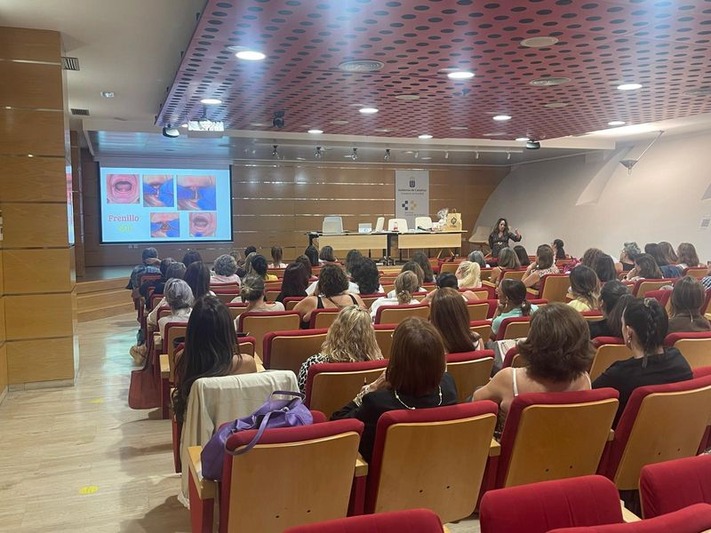
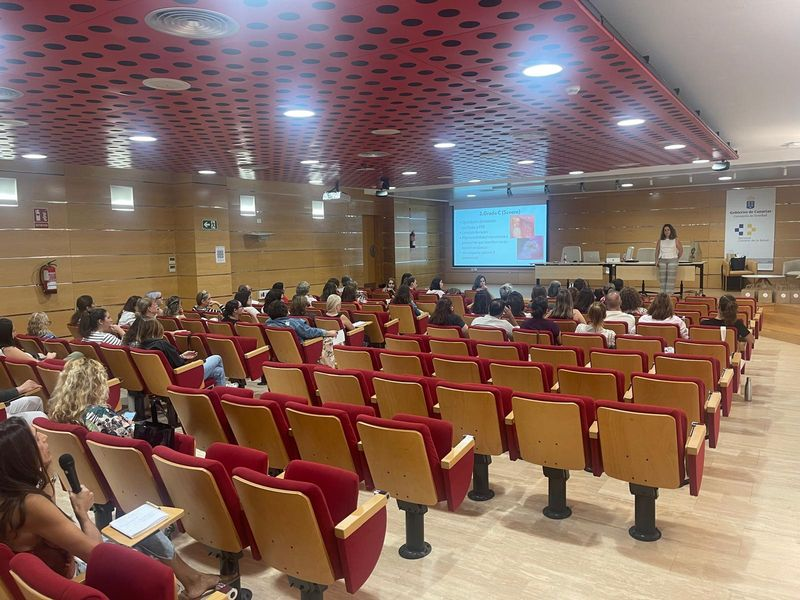
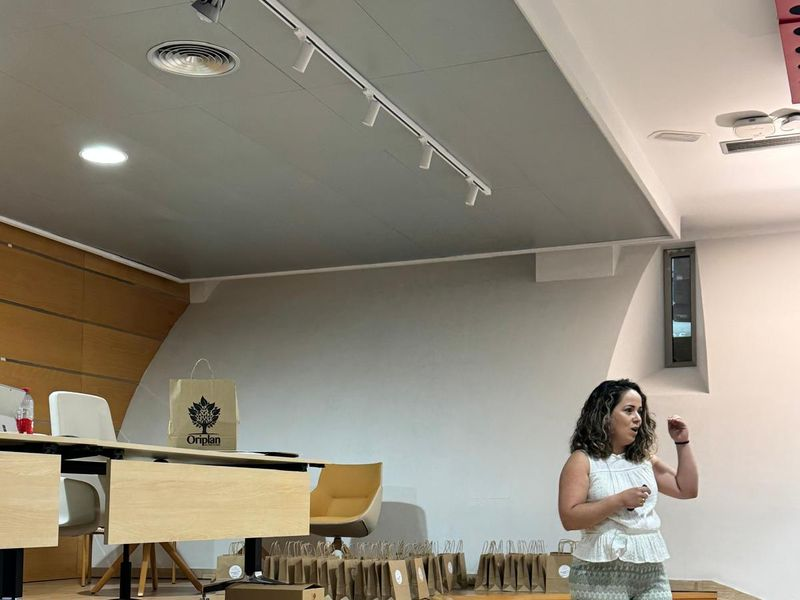
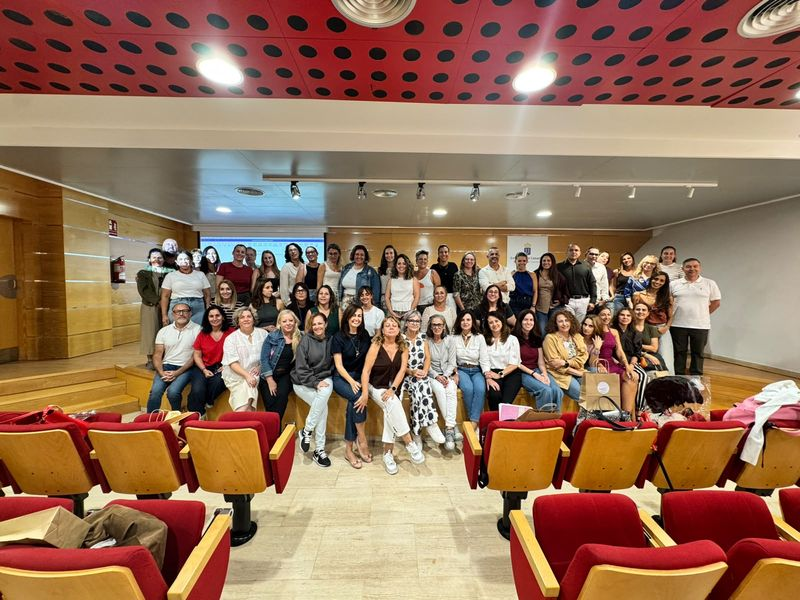
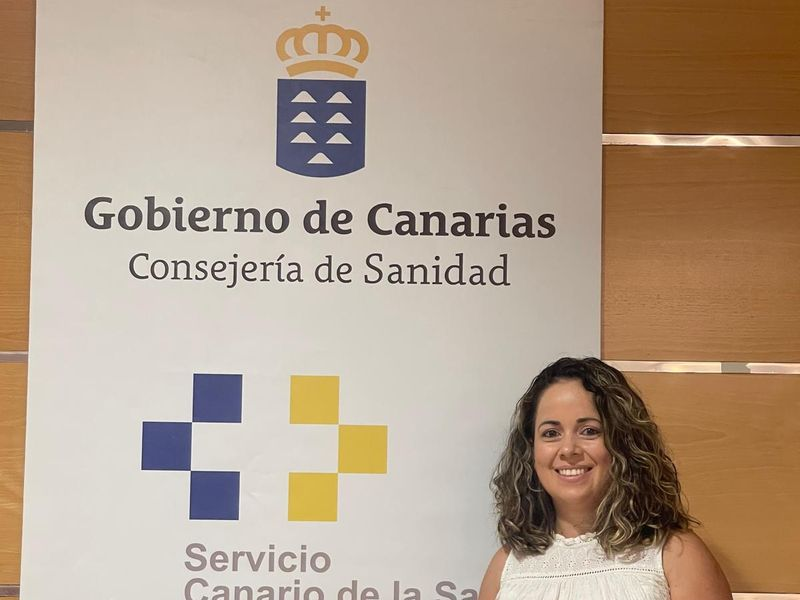
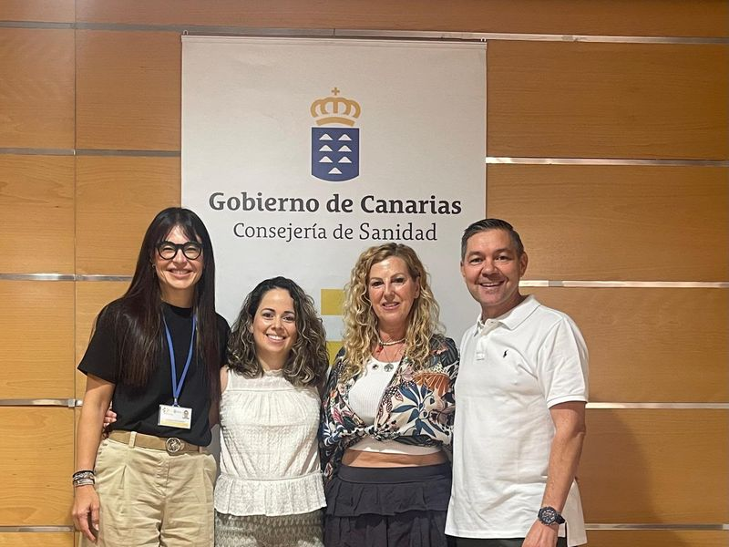
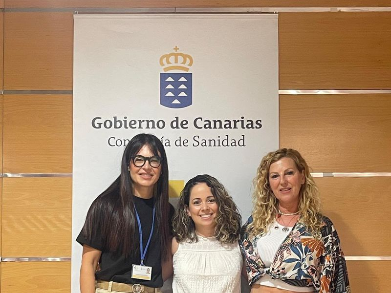
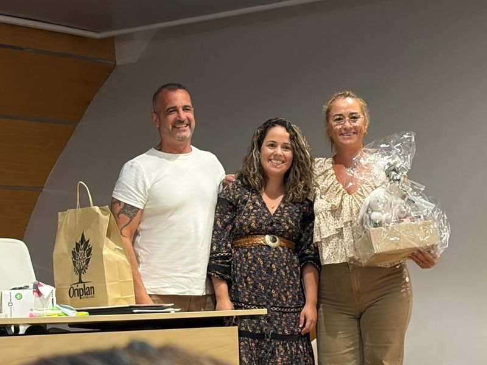
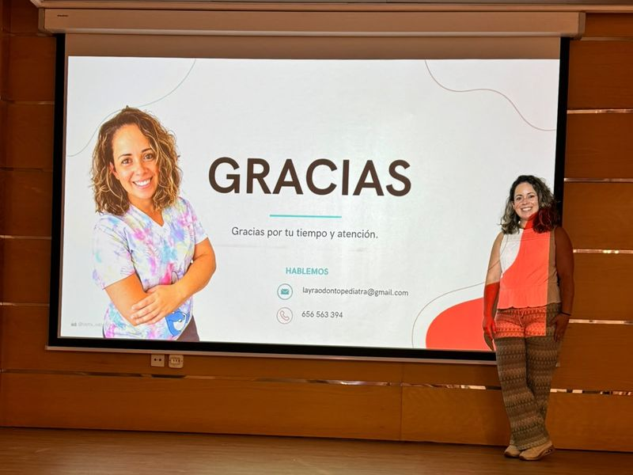

Formación para dentistas: odontopediatría de los primeros 1000 días a la diversidad funcional
Hace poco tuve la suerte de impartir una formación en odontopediatría dirigida a dentistas, en una jornada vinculada a la Consejería de Sanidad del Gobierno de Canarias y al Servicio Canario de la Salud. Fue una oportunidad preciosa para compartir con compañeros y compañeras lo que veo cada día en consulta y cómo lo abordo, siempre desde una odontología infantil respetuosa y basada en la evidencia.
Estos fueron los temas que tratamos:
- Los primeros 1000 días del bebé y la anquiloglosia.
- Caries de la primera infancia.
- Técnica de Hall.
- Mantenedores de espacio.
- Hipomineralización incisivo-molar (MIH).
- Manejo de conducta en el paciente pediátrico.
- Tratamiento multidisciplinar en pacientes con diversidad funcional y con problemas de crecimiento de los maxilares.
Los primeros 1000 días y la anquiloglosia
Desde el embarazo hasta los dos años se abre una ventana única para la salud oral: se establecen hábitos de alimentación e higiene, se desarrolla la función de la lengua y se sientan las bases del crecimiento de los maxilares. Por eso insistimos en la importancia de una primera visita temprana y en el papel del dentista como acompañante de la familia desde el principio.
Dentro de este periodo dedicamos un espacio especial a la anquiloglosia o frenillo lingual limitante. Hablamos de cómo valorar el frenillo atendiendo sobre todo a la función (y no solo a su aspecto), de su relación con las dificultades en la lactancia y de la importancia de trabajar en equipo con matronas, asesoras de lactancia, logopedas y fisioterapeutas.
Caries de la primera infancia
La caries de la primera infancia sigue siendo una de las enfermedades crónicas más frecuentes en niños pequeños, y en gran medida es prevenible. Repasamos los factores de riesgo (biberón o pecho nocturno con azúcares, consumo frecuente de azúcares, higiene insuficiente) y las claves de prevención: cepillado desde el primer diente con pasta fluorada adaptada a la edad, dieta, y revisiones periódicas para detectar las lesiones en fases iniciales, cuando todavía pueden detenerse.
Técnica de Hall
La técnica de Hall consiste en colocar una corona metálica preformada sobre el molar temporal con caries, sin necesidad de anestesia ni de eliminar el tejido cariado. Al sellar el diente, la caries deja de recibir “alimento” y se detiene. Es una opción mínimamente invasiva, con buenos resultados a largo plazo y muy bien tolerada por los niños, especialmente útil en pacientes pequeños o con poca colaboración.
Mantenedores de espacio
Cuando un diente de leche se pierde antes de tiempo, los dientes vecinos pueden desplazarse y ocupar el hueco que necesitará el diente definitivo. Revisamos cuándo está indicado colocar un mantenedor de espacio, los distintos diseños (fijos y removibles) y cómo hacer su seguimiento hasta la erupción del diente permanente.
Hipomineralización incisivo-molar (MIH)
La MIH es un defecto en la calidad del esmalte que afecta a uno o varios primeros molares permanentes y, con frecuencia, a los incisivos. Se manifiesta con opacidades bien delimitadas (blancas, amarillas o marrones), esmalte que se fractura con facilidad tras la erupción y, en muchos casos, una sensibilidad que hace difícil incluso el cepillado. Hablamos de cómo clasificarla según su severidad y de las opciones de tratamiento, desde la remineralización y el control de la sensibilidad hasta las restauraciones y coronas en los casos más severos.
Manejo de conducta en el paciente pediátrico
La técnica es importante, pero en odontopediatría lo es igual saber acompañar. Compartimos estrategias de comunicación como decir-mostrar-hacer, el refuerzo positivo, la distracción o la anticipación, adaptadas a la edad y a la personalidad de cada niño, y cómo implicar a la familia. El objetivo es que cada visita construya confianza y no miedo.
Un niño que sale tranquilo de la consulta es un niño que volverá sin miedo. Eso también es salud oral.
Tratamiento multidisciplinar: diversidad funcional y crecimiento de los maxilares
Terminamos hablando de los pacientes que más se benefician del trabajo en equipo. En los pacientes con diversidad funcional, la coordinación con pediatras, logopedas, terapeutas ocupacionales y otros especialistas permite adaptar la consulta y los tratamientos a cada caso. Y en los niños con problemas de crecimiento de los maxilares, la detección precoz y la ortopedia funcional, junto con otorrinos, logopedas y ortodoncistas, ayudan a guiar un desarrollo craneofacial y una respiración saludables.
Gracias
Quiero dar las gracias a la organización y a todos los compañeros y compañeras que asistieron, por su interés, sus preguntas y el ambiente tan bonito que se creó. Compartir conocimiento entre profesionales es la mejor manera de que cada vez más niños y niñas reciban una atención de calidad, cerca de casa.
Imágenes de la formación
Algunos momentos de la jornada. Pulsa en cualquier foto para verla en grande.


















Más artículos del blog
Anquiloglosia en bebés: qué es el frenillo lingual y cuándo consultar
Dificultades en la lactancia, chasquidos al mamar o poca movilidad de la lengua pueden ser señales a revisar. Te contamos qué es la anquiloglosia y qué esperar de una valoración.
Primera visita al dentista infantil: cuándo y cómo prepararla
Las recomendaciones internacionales hablan de la 'visita del primer año': por qué merece la pena adelantarse y cómo hacer que sea una experiencia tranquila para tu peque.